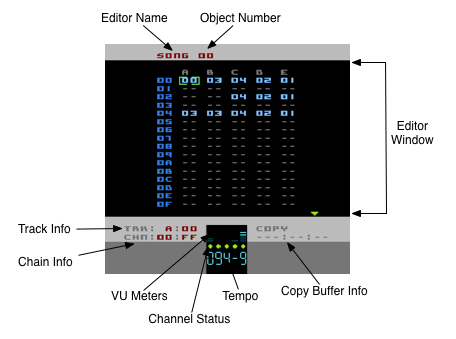

Screen Layout
The UI in Pulsar, like LSDJ, is all based on a single-screen-per-editor format.

Editor Name
This text tells you which editor page you are currently in.
Object Number
Where applicable, this number is the current Object you are editing. In this case 'SONG 00' shows you are editing Song 00. Some editor pages don't require an object number as the objects they relate to are presented in a list format and in those cases the object you are editing are represented by a whole row of the list.
Editor Window
This area is pretty much the only part of the display that will change as you go through the different editor pages and is where your editing cursor is limited to. This is also the area of the display that is affected by the Colours options in the Setup Page.
Copy Buffer Info
This information gets updated each time you copy an object (or part of an object) to the Copy Buffer.
Tempo
Shows you the current tempo of the Song. You can't actually edit the BPM setting of a Song directly - the playback speed of a Song is controlled by the Speed Tables. Therefore this display is for information only.
Channel Status
This is a little row of 5 'lights' that tell you the status of each Track. A steady green light means the Track is active. A steady grey light means the Track is muted. A blinking red light means that the Track has been soloed.
VU Meters
Here are 5 dynamic meters that represent activity on each Track. For Tracks A,B and D the amplitude is represented by the height of the bar. Tracks C and E don't have amplitude information and because of that the meters for those Tracks just hit maximum each time a new note is played.
Track Info
This tells you which Track and Track Step Pulsar regards as the 'current' Track. This is handy for certain editing functions when you're not in the Song Editor.
Chain Info
Similar to Track Info, this tells you which Chain and Chain Step Pulsar regards as the current Chain. Handy to know when you're in the Pattern editor, for example.